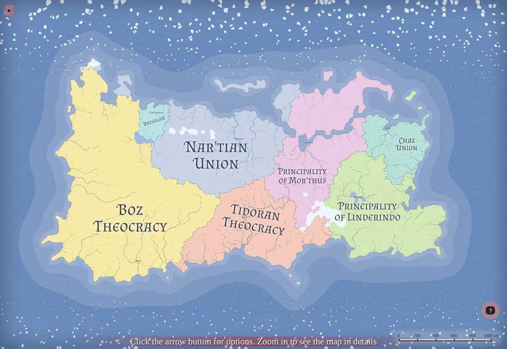
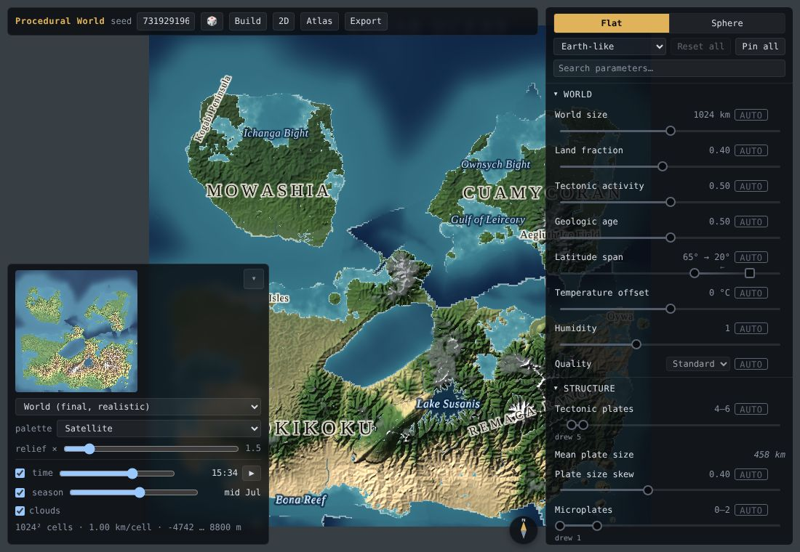
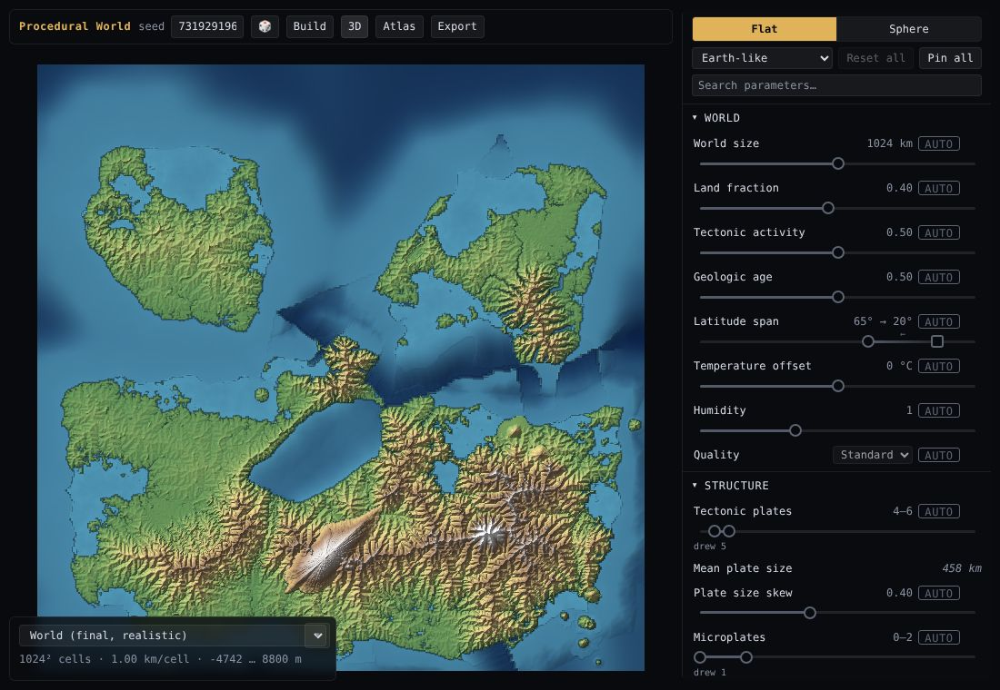
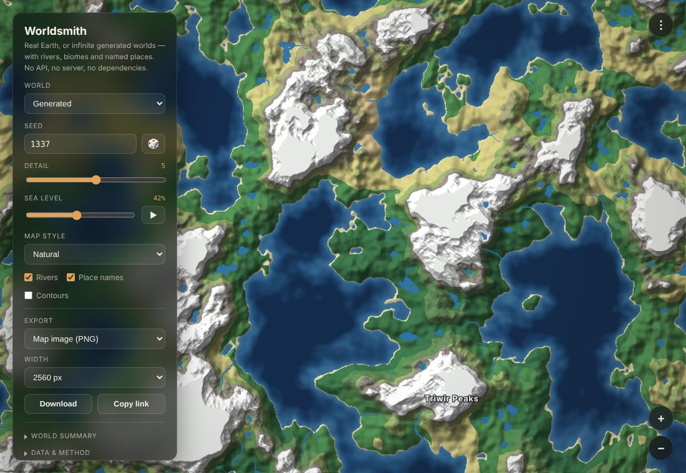
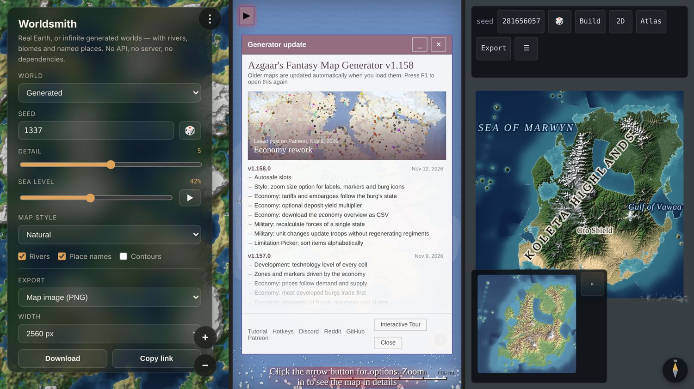

地図データの候補の検証(2026-11-15)
概要: 3つを同じ条件で動かして比べました。軽さは Worldsmith が最良、地形の本格さは procedural-world-generation が最良、国や国境があるのは Azgaar だけです。どれも一長一短で、決め手はまだありません。
比べた結果
| Azgaar | procedural-world-generation | Worldsmith | |
|---|---|---|---|
| ライセンス | MIT | MIT | MIT |
| 転送サイズ | 2.5MB(71ファイル) | 0.75MB(4ファイル) | 0.15MB(8ファイル) |
| 読み込み | 0.9秒 | 0.3秒 | 0.3秒 |
| 世界ができるまで | 約2.6秒(約4,400区画) | 約33秒(1024×1024、標準品質) | 約1.3秒 |
| メモリ(JS) | 約39MB | 約226MB | 約12MB |
| 動かした時のコマ数 | 約70/秒 | 約31/秒(立体) | 約80/秒 |
| 国・国境 | あり(国名・街道・都市まで) | なし(地名のみ) | なし(地名のみ) |
| 立体表示 | あり(標準) | あり(凹凸の強調つき) | なし |
| 取り出せるもの | 地図の全データ、画像 | 標高画像、色画像、世界のデータ | 画像、SVG、世界のデータ、標高画像 |
| iPhone の画面 | 表示できた(説明窓が大きい) | 表示できた(操作は画面上部に折りたたみ) | 表示できた |
測った環境:クラウド上の2コアの計算機、画面描画はソフトウェア処理。数字は相対的な目安で、iPhone での実測ではありません。コマ数は、画面をドラッグした3秒間の目安です。
見た目
Azgaar(平面。国と国境が分かる)

Azgaar の立体(前に貼ったもの)
procedural-world-generation(立体。山の凹凸と陰影が本格的)

同・平面

Worldsmith(平面。軽くて速い。山の陰影がきれい)

iPhone サイズ(左から Worldsmith、Azgaar、procedural-world-generation)

気づいたこと
- procedural-world-generation: 世界を作るのに時間がかかり、メモリも大きいです。見せる場面では、作った結果を保存して使う形が現実的です。見た目は写実寄りで、「稚拙な立体の味」とは逆の方向です。
- Worldsmith: 最も軽く、速いです。ただし国と立体表示がありません。標高画像を取り出して、立体は私たちで作る使い方になります。
- Azgaar: 世界に国と国境があり、戦記に必要な骨格が揃っています。立体は荒い味があります。
検証できなかったこと
- Loremapper は、編集にパソコン用のブラウザが要り、試作版でもあるため、今回は動かしていません。
- procedural-world-generation の品質を下げた場合の速さは、測っていません。
- iPhone での実際の速さ、メモリ制限は、測っていません。
- Azgaar の区画を増やした大きな世界での重さは、測っていません。